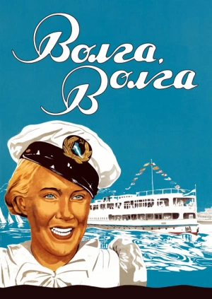
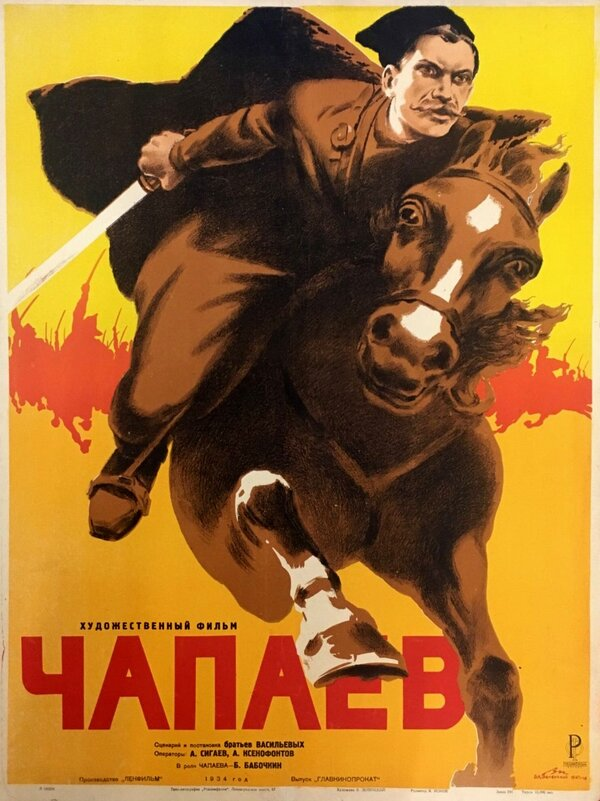
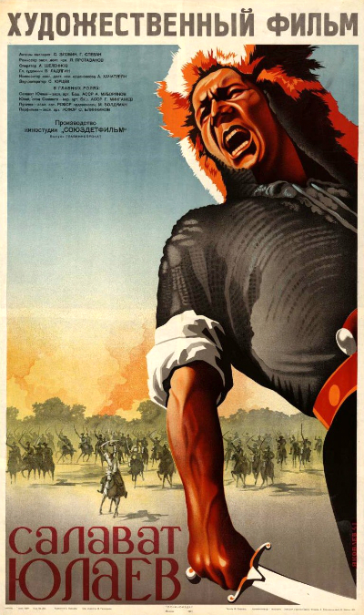
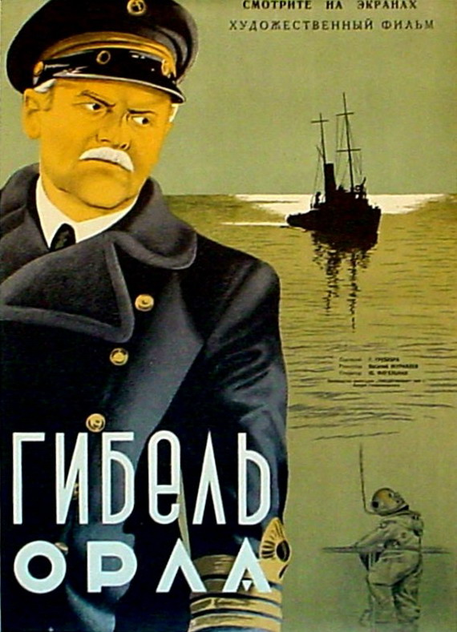
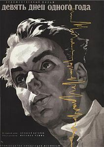
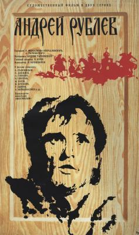
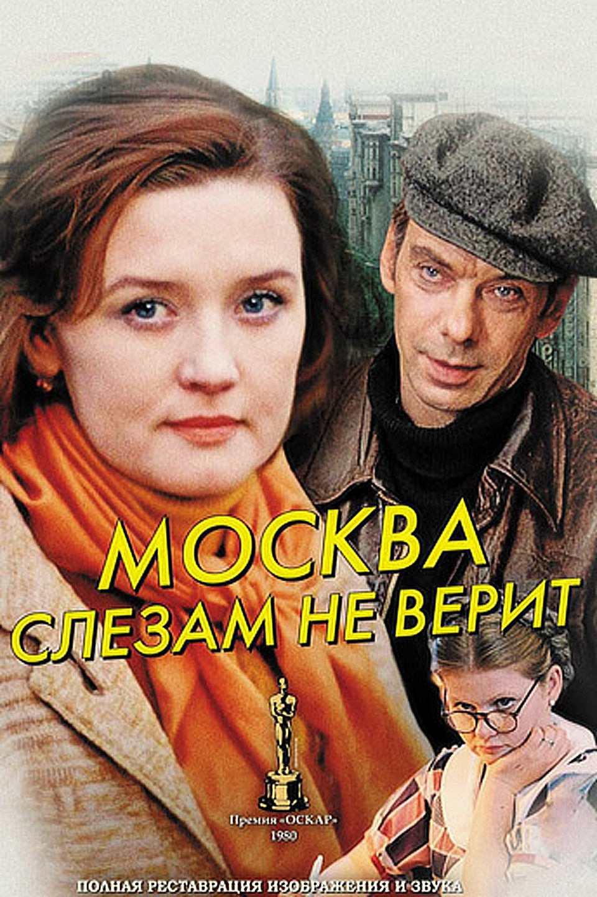
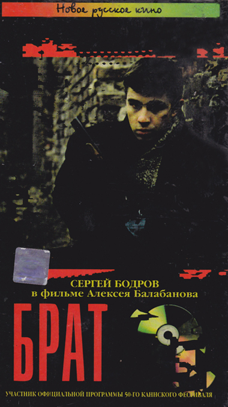

Развитие российского кино
Листайте вниз, чтобы больше узнать о кино разных десятилетий
30-е годы
30-е, звуковые, годы стали в кино эпохой торжества соцреализма, пришедшего на смену киноэкспериментам и свободному (даже если и откликающемуся на идеологические запросы) авангардному российскому кино начала века. Режиссерам приходилось подстраиваться: самым великим удавалось сочетать собственные художественные искания с «политикой партии» — например, «королю комедии» Григорию Александрову и его музе Любови Орловой, с именами которых связано рождение не только нового жанра, но и приход на экраны музыки.


40-е годы
Следующее десятилетие — 40-е — самое тяжелое в истории как страны, так и советского кинематографа. Война не остановила кинематографистов, хотя и стала причиной начала эпохи так называемого малокартинья, но изменила жанровую и тематическую направленность их работы.


50-е годы
Во второй половине 50-х, с началом оттепели, советское кино пережило, можно сказать, второе рождение. Фильм «Летят журавли» Михаила Калатозова принес стране первую и пока все еще единственную победу на Каннском кинофестивале.
Тогда же дебютировали Григорий Чухрай и Марлен Хуциев, свои «Девять дней одного года» снял Михаил Ромм. На экранах снова можно было смотреть комедии, совсем другие, снятые Леонидом Гайдаем, Эльдаром Рязановым, Георгием Данелией, сказки и экранизации литературной классики. В том числе и «Войну и мир» Сергея Бондарчука — картину, получившую премию «Оскар».


60-е годы
Именно в 60-е свои первые шедевры — «Иваново детство» и «Андрей Рублев» — снял Андрей Тарковский. А Юрий Гагарин полетел в космос — футуристические мечты о космосе стали реальностью.
Оттепель закончилась и для страны, и для отечественного кино в 1968 году, одновременно с вводом советских войск в Чехословакию.


70-е годы
Несмотря на то что многие фильмы 1970-х легли на полку, а другие если и выходили, то крошечным количеством копий, некоторые шедевры все-таки добирались до экранов — речь о фильмах, которые стоит посмотреть всем, режиссеров Глеба Панфилова, Василия Шукшина, Никиты Михалкова, Ролана Быкова. Именно в эти годы на экраны вышла картина «Москва слезам не верит» Владимира Меньшова, получившая в итоге «Оскар». Продолжали снимать свои кассовые комедии и Гайдай, и Данелия, и Рязанов. А зрители шли в кинотеатры не столько на фильмы, сколько на имена — Андрея Миронова, Анатолия Папанова, Людмилу Гурченко, Евгения Леонова, Юрия Богатырева, Александра Кайдановского.


80-е и 90-е годы
Перестроечные 80-е, а потом и 90-е оставили за бортом не только многих режиссеров, но и, кажется, наработанный ими за многие годы киноязык. Первая либеральная волна сняла с полки многие долгое время запрещенные советские фильмы, вместе с «Ассой» Сергея Соловьева с экранов зазвучал рок.
Эта же волна, впрочем позднее, вынесла на берег огромное количество чернухи и низкопробного жанрового кино, так что зрители все больше предпочитали выросшие на просторах родины как грибы после дождя видеосалоны, где с кассет крутили западные блокбастеры. Интерес к отечественному кино внутри страны угас, зато зарубежные кинофестивали, наоборот, с радостью принимали в свои программы российские фильмы — призы получали картины Киры Муратовой, Никиты Михалкова, Глеба Панфилова, Павла Лунгина.


На этом всё, спасибо!